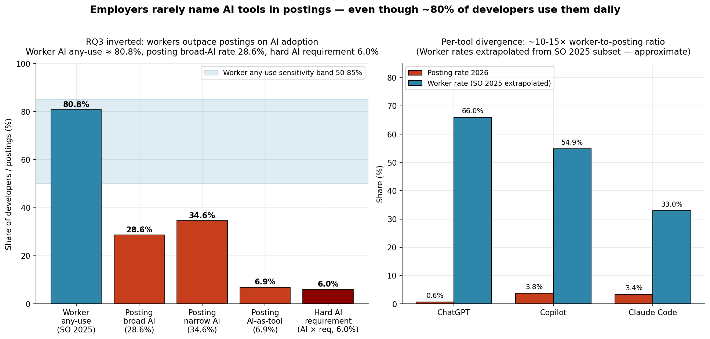
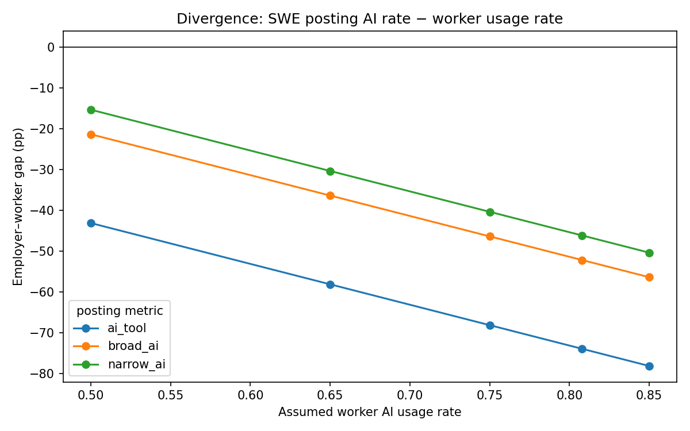
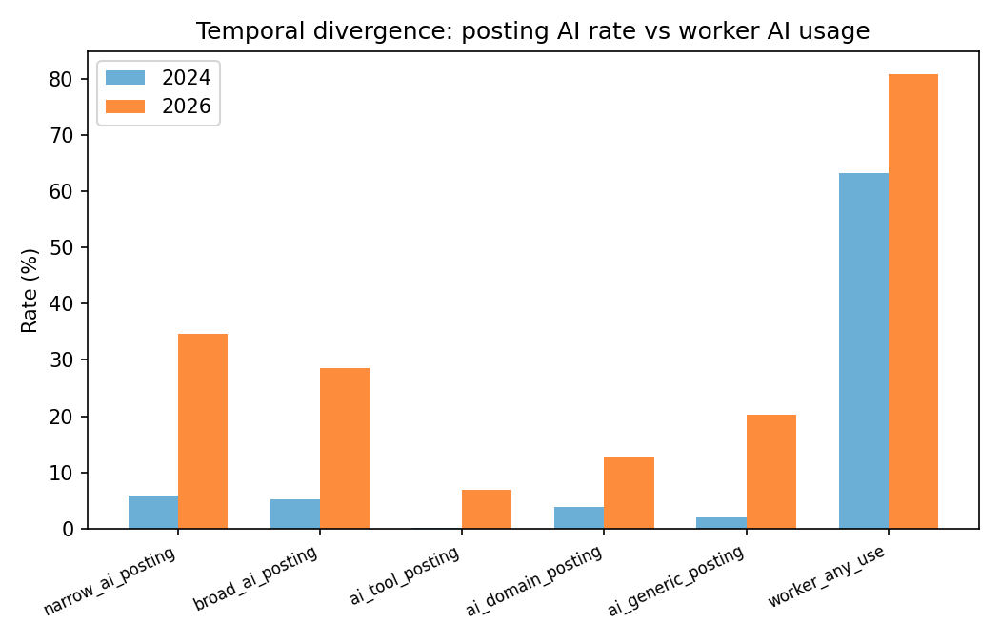

Finding 2 — Posting language LAGS worker AI adoption by roughly an order of magnitude¶
Lead finding. The direction is the opposite of the original RQ3 hypothesis.
Claim¶
Worker-side AI tool adoption — measured as Stack Overflow 2025 "professional developers, any use of AI tools in their daily work" at 80.8% — exceeds employer-side AI posting language by roughly an order of magnitude on the broad layer and by more than a factor of 13 at the hard-requirement layer. Job postings are a lagging indicator of workplace AI adoption, not a leading one. This contradicts the popular "employers demand impossible AI skills" framing and the anticipatory-restructuring framing in the original research design.
The numbers (2026 SWE LinkedIn, default filters)¶
| Measure | 2026 posting | Worker rate | Gap | Ratio |
|---|---|---|---|---|
| Broad AI (24-term union) | 28.6% | 80.8% (SO 2025 pro any-use) | −52.2 pp | 0.35 |
| Narrow AI (LLM-labeled subset) | 34.6% | 80.8% | −46.2 pp | 0.43 |
| AI-as-tool (copilot/cursor/claude/chatgpt) | 6.9% | 80.8% | −73.9 pp | 0.08 |
| Hard AI requirement (AI × requirements section) | 6.0% | 80.8% | −74.8 pp | 0.07 |
Cite the broad AI ratio 0.35 as the lead number. Soften per-tool claims to "~10-15× worker-to-posting ratio for the major AI coding tools." Do NOT cite the 108× ChatGPT ratio — denominator near zero, unstable. (Gate 3 correction 3.)
Temporal: posting-side broad AI grew 5.6× (5.13% → 28.6%), worker-side grew 1.28× (63.2% → 80.8%). Posting-side is growing faster in ratio, but from a much lower base and still well below.
The section-location mechanism (T22/T23)¶
Employers describe AI as what you will do, not what you must have. The asymmetry is clean in the section classifier:
- Only 21-24% of AI mentions land in the
requirementssection, vs 34-39% for non-AI tech (lift −13 to −16 pp). - AI lives in responsibilities + role_summary.
- AI's share in
preferredsections tripled (2.4% → 7.9%).
This is the direct mechanism behind the 6.0% hard-requirement rate and the 13.5× worker-to-posting ratio at the requirement layer.
Figures¶

Interview artifact — broad AI posting rate (28.6%) vs hard requirement (6.0%) vs worker any-use (80.8%), with the 50-85% worker-rate sensitivity band shown.
T23 — direction robust across the 50-85% worker-rate sensitivity range.
T23 — posting side is catching up in ratio, but from a much lower base.Sensitivity checks this claim must survive¶
| Test | Requirement | Result |
|---|---|---|
| Worker-rate sensitivity band | Direction holds at 50% floor | Holds at 50% — PASS |
| V2 re-derivation | Within 1 pp | Within 1 pp on every metric — PASS |
| Section-stratified hard rate | AI < non-AI in requirements | 21-24% vs 34-39% — PASS |
| Narrow vs broad split | Cited separately | PASS (T05 + T14) |
| Macro ratio | ≥ 10 | 24.7× on broad AI — PASS |
Known reviewer attack surface¶
- Stack Overflow self-selection bias. Mitigation: sensitivity range 50-85%; Anthropic, Accenture, GitClear, and the SO blog all put professional-developer AI any-use in the 75-84% range. Direction holds at the lowest plausible worker rate (50%).
- Per-tool figures are approximate. SO 2025 publishes per-tool shares among the "AI agent user" subset. T23 multiplies by 80.8% any-use to get unconditional rates, which introduces uncertainty. Soften to "~10-15×."
- Section classifier was validated on ≥95% precision (T13) but not specifically audited on AI-relevant rows. Open question for Wave 5 / analysis phase.
Task citations¶
- T23 — Employer/usage divergence — headline numbers, per-tool, temporal.
- T14 — Technology ecosystem mapping — broad 24-term union.
- T22 — Ghost & aspirational forensics — section-level AI location test.
- T19 — Temporal patterns — 24.7× macro ratio.
- V2 verification (Gate 3) — full re-derivation Section 2, sensitivity band re-verified.
What this finding does NOT say¶
- It does not say "employers don't use AI in hiring." It says they don't write about AI as a requirement — the tools are assumed, not specified.
- It does not say workers know more AI than employers need — only that employer posting language is 10× behind worker adoption, which means postings are a lagging instrument.
- It does not claim 108× for ChatGPT — that ratio has a near-zero denominator and is unstable. Use the broad 0.35 ratio as the headline.
The reframe¶
Postings are a lagging indicator, not an anticipating one. Every past study that used job-posting language as a forward indicator of labor-market skill demand is one correction away from a revision. The posting update lag is itself a quantifiable, multi-year phenomenon worth studying.